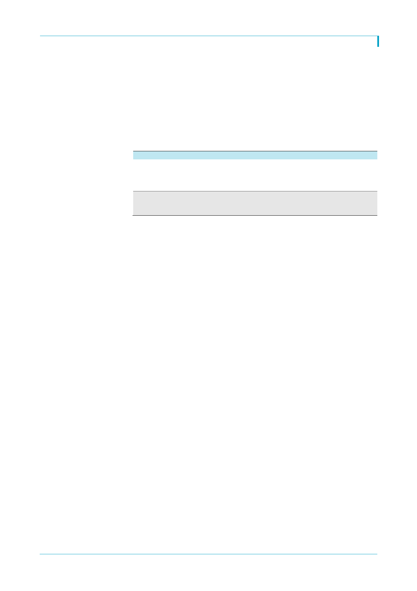

오리온(001800)
과시장의 상대적 부진도 현재 수준에서 더 악화될 것으로 보이지는 않는다. 낮은 지역 침
투율을 감안하면 동사가 또한 중국 peers 대비 주가 지표가 낮을 이유는 없다는 판단이다.
동사의 현재 예상 PER은 2017년과 2018년이 각각 16.6배, 14.1배로 중국 제과 peers 평
균 20.0배, 19.2배, 세계 제과 peers 평균 19.7배, 17.9배 보다 낮다. 2017년에는 영업모
멘텀이 약하지만 이는 다시 2018년에는 회복될 것이며, 강한 수요 기반과 비용 제어 능력
을 감안하면 영업안정성은 높게 평가해야 된다고 본다. 주가가 조정을 보일 때 마다 매수
하는 전략을 권고한다.
<표 1> 4Q16 잠정 연결 실적
매출액
영업이익
세전이익
당기순이익
영업이익률
세전이익률
당기순이익률
4Q16P
632.4
85.0
98.3
70.1
13.4
15.5
11.1
4Q15
604.0
66.4
53.1
30.3
11.0
8.8
5.0
자료: Quantiwise, 한국투자증권
YoY
4.7
28.1
85.0
131.5
3Q16
597.2
94.4
90.1
89.1
15.8
15.1
14.9
QoQ
5.9
(9.9)
9.2
(21.3)
당사 추정치
623.7
81.5
71.7
45.6
13.1
11.5
7.3
차이
1.4
4.3
37.1
53.7
(단위: 십억원, %)
Consensus
614.5
77.8
69.5
39.6
12.7
11.3
6.4
차이
2.9
9.3
41.4
77.1
2